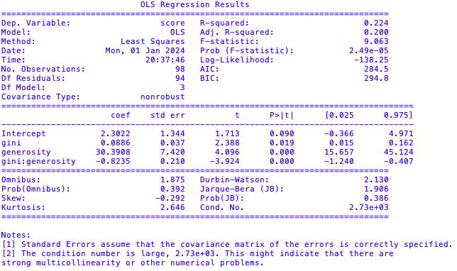
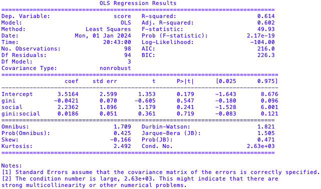

import pandas as pd
import statsmodels.api as sm
import statsmodels.formula.api as smf
import numpy as np
# Load data
data = pd.read_csv('./data/WHR_2019_Full.csv')
data = data.dropna(subset=['Overall rank', 'Continent', 'Country or region', 'Score', 'GDP per capita', 'Social support',
'Healthy life expectancy', 'Freedom to make life choices', 'Generosity', 'Perceptions of corruption',
'Gini index'])
overall = data['Overall rank'].values
continent = data['Continent'].values
country = data['Country or region'].values
score = data['Score'].values
gdp = data['GDP per capita'].values
social = data['Social support'].values
lifestyle = data['Healthy life expectancy'].values
freedom = data['Freedom to make life choices'].values
generosity = data['Generosity'].values
perception = data['Perceptions of corruption'].values
gini = data['Gini index'].values
model = smf.ols(formula='score ~ gini + generosity + gini:generosity', data=data)
results = model.fit()
print(results.summary())
import matplotlib.pyplot as plt
# Create dummy variables for social support (low & high)
data['generosity_dummy'] = pd.get_dummies(data['Generosity']).iloc[:, 1]
# Generate predicted values for different levels of social support
pred_data = pd.DataFrame({'gini': data['Gini index'], 'generosity_dummy': data['generosity_dummy']})
pred_data['predicted_happiness'] = results.predict(pred_data)
# Scatter plot
scatter = plt.scatter(gini, score, c=generosity, cmap='plasma', edgecolors='black', linewidths=0.2, s=75)
plt.xlabel('Gini Index', fontweight='bold')
plt.ylabel('World Happiness Score', fontweight='bold')
plt.title('Mediating Effect of Generosity on Gini Index against Happiness', fontweight='bold')
cbar = plt.colorbar(scatter)
cbar.set_label('Generosity', fontweight='bold')
plt.gca().invert_xaxis()
plt.show()
About about about

import pandas as pd
import statsmodels.api as sm
import statsmodels.formula.api as smf
# Load data
data = pd.read_csv('./data/WHR_2019_Full.csv')
data = data.dropna(subset=['Overall rank', 'Continent', 'Country or region', 'Score', 'GDP per capita', 'Social support',
'Healthy life expectancy', 'Freedom to make life choices', 'Generosity', 'Perceptions of corruption',
'Gini index'])
overall = data['Overall rank'].values
continent = data['Continent'].values
country = data['Country or region'].values
score = data['Score'].values
gdp = data['GDP per capita'].values
social = data['Social support'].values
lifestyle = data['Healthy life expectancy'].values
freedom = data['Freedom to make life choices'].values
generosity = data['Generosity'].values
perception = data['Perceptions of corruption'].values
gini = data['Gini index'].values
model = smf.ols(formula='score ~ gini + social + gini:social', data=data)
results = model.fit()
print(results.summary())
import matplotlib.pyplot as plt
# Create dummy variables for social support (low & high)
data['social_support_dummy'] = pd.get_dummies(data['Social support']).iloc[:, 1]
# Generate predicted values for different levels of social support
pred_data = pd.DataFrame({'gini': data['Gini index'], 'social_support_dummy': data['social_support_dummy']})
pred_data['predicted_happiness'] = results.predict(pred_data)
# Scatter plot
scatter = plt.scatter(gini, score, c=social, cmap='plasma', edgecolors='black', linewidths=0.2, s=75)
plt.xlabel('Gini Index', fontweight='bold')
plt.ylabel('World Happiness Score', fontweight='bold')
plt.title('Mediating Effect of Social Support on Gini Index against Happiness', fontweight='bold')
cbar = plt.colorbar(scatter)
cbar.set_label('Social Support', fontweight='bold')
plt.gca().invert_xaxis()
{kind=link}